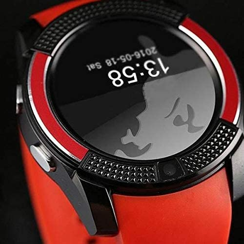

Classic watch


smart watch

Metal watches

link amazon
- يوجد الكثير من الساعات الذكية التي يمكنك الاختيار من بينها، ويمكنك أن تجد ساعات من أشهر الشركات التقنية في العالم، وذلك بالإضافة إلى شركات صناعة الساعات المشهورة، مثل: Fossil و Garmin كمثال.
- وتأتي الساعات الذكية بمجموعة من المواصفات الأساسية التي يجب أن توجد فيها، وذلك حتى تتمكن من استخدامها، ولذا لا تفكر في أي ساعة ذكية لا تمتلك هذه المواصفات.
- بالرغم من أن الساعات الذكية هي أحدث صيحة في مجال التقنية، إلا أنها لاتزال قطعة إضافية ويمكنك العيش دونها، ولذلك يجب أن تحدد ميزانية ثابتة لا تخرج عنها حتى تتمكن من الاختيار بدقة
- ويمكنك الحصول على ساعة ذكية مميزة من شركة مرموقة بدايةً من 100 دولار، وتصل أسعار الساعات الذكية إلى أكثر من 1000 دولار للإصدارات الرائدة منها.
- إن الساعة الكلاسيكية تُعتبر دليل على موثوقية من يرتديها كما أنها تتميز بالمظهر الأصيل مثل الساعات السويسرية القديمة
- في حين أنها في الغالب ما تأتي مع لمسة عصرية للرجال المعاصرين، ويمكن القول بأن ساعة الرجل الكلاسيكية تُعد إضافة مميزة إلى أسلوب الرقي
- يوجد الكثير من الساعات الذكية التي يمكنك الاختيار من بينها، ويمكنك أن تجد ساعات من أشهر الشركات التقنية في العالم، وذلك بالإضافة إلى شركات صناعة الساعات المشهورة، مثل: Fossil و Garmin كمثال.
- وتأتي الساعات الذكية بمجموعة من المواصفات الأساسية التي يجب أن توجد فيها، وذلك حتى تتمكن من استخدامها، ولذا لا تفكر في أي ساعة ذكية لا تمتلك هذه المواصفات.
- بالرغم من أن الساعات الذكية هي أحدث صيحة في مجال التقنية، إلا أنها لاتزال قطعة إضافية ويمكنك العيش دونها، ولذلك يجب أن تحدد ميزانية ثابتة لا تخرج عنها حتى تتمكن من الاختيار بدقة
- ويمكنك الحصول على ساعة ذكية مميزة من شركة مرموقة بدايةً من 100 دولار، وتصل أسعار الساعات الذكية إلى أكثر من 1000 دولار للإصدارات الرائدة منها.
- إن الساعة الكلاسيكية تُعتبر دليل على موثوقية من يرتديها كما أنها تتميز بالمظهر الأصيل مثل الساعات السويسرية القديمة
- في حين أنها في الغالب ما تأتي مع لمسة عصرية للرجال المعاصرين، ويمكن القول بأن ساعة الرجل الكلاسيكية تُعد إضافة مميزة إلى أسلوب الرقي
لينك الصفحه الرئيسيه